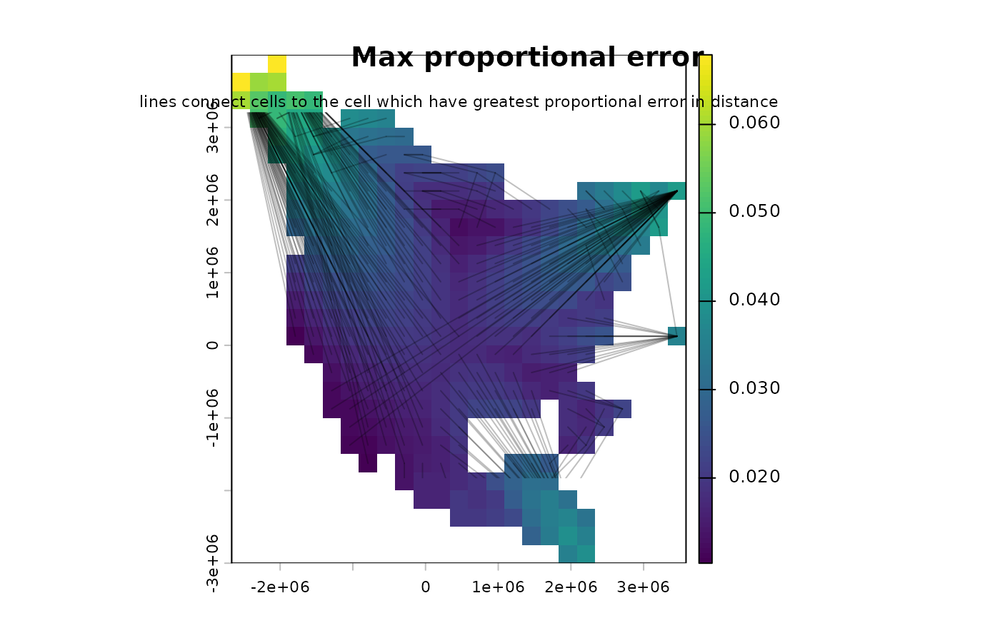

Calculate great circle distances among BirdFlow object cells
Source:R/calculate_distance_matrix.R
great_circle_distances.RdThis function calculates a square, distance matrix with n_active() cells
on each side. Each cell represents the distance between the it's
row index and colum index treated as locations in the state space; e.g.
The cell [3, 8] represents the distance between locations 3 and 8 in the
state space vector.
Value
a n x n matrix containing pairwise distances in kilometers between every active cell in the BirdFlow object.
Examples
# Calculate great circle distance matrix
library(terra)
bf <- BirdFlowModels::rewbla
gs <- great_circle_distances(bf)
# The above is all you need to use the function.
# The rest of this is an exercise to visualize the error in CRS distances
# Compare to euclidean distances in projected CRS space
i <- seq_len(n_active(bf))
xy <- as.data.frame(i_to_xy(i, bf))
eu <- as.matrix(dist(xy)) / 1000 # euclidean in CRS (km)
error_prop <- abs(gs - eu) / gs
error_prop[is.nan(error_prop)] <- 0
mean_error <- apply(error_prop, 1, mean) # mean error for cell
max_error <- apply(error_prop, 1, max) # max error for cell
# Calculate maximum error lines for each cell
mel <- data.frame(i1 = 1:n_active(bf), i2 = apply(error_prop, 1, which.max))
xs <- t(cbind(i_to_x(mel$i1, bf), i_to_x(mel$i2, bf)))
ys <- t(cbind(i_to_y(mel$i1, bf), i_to_y(mel$i2, bf)))
# Plot maximum error for each cell and a line to the cell where the distance
# had that error.
plot(rasterize_distr(as.numeric(max_error), bf))
title(main = "Max proportional error")
matlines(xs, ys, col = rgb(0, 0, 0, .25), lty = 1, lwd = 1)
mtext("lines connect cells to the cell for there is the greatest proportional error in distance",
line = 0, cex = 0.7)
